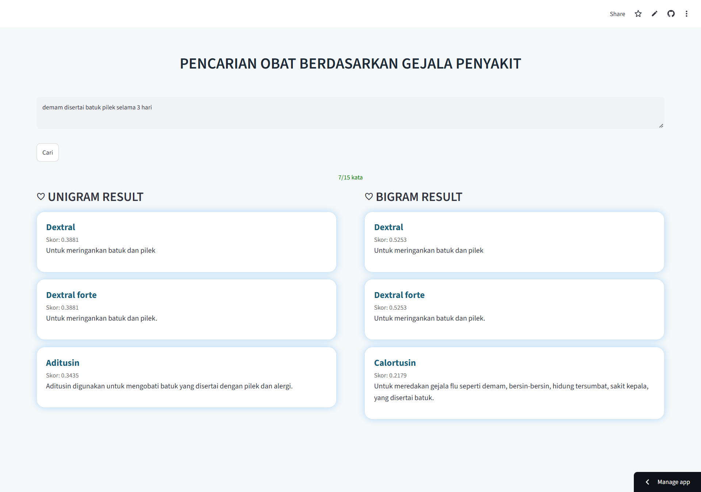
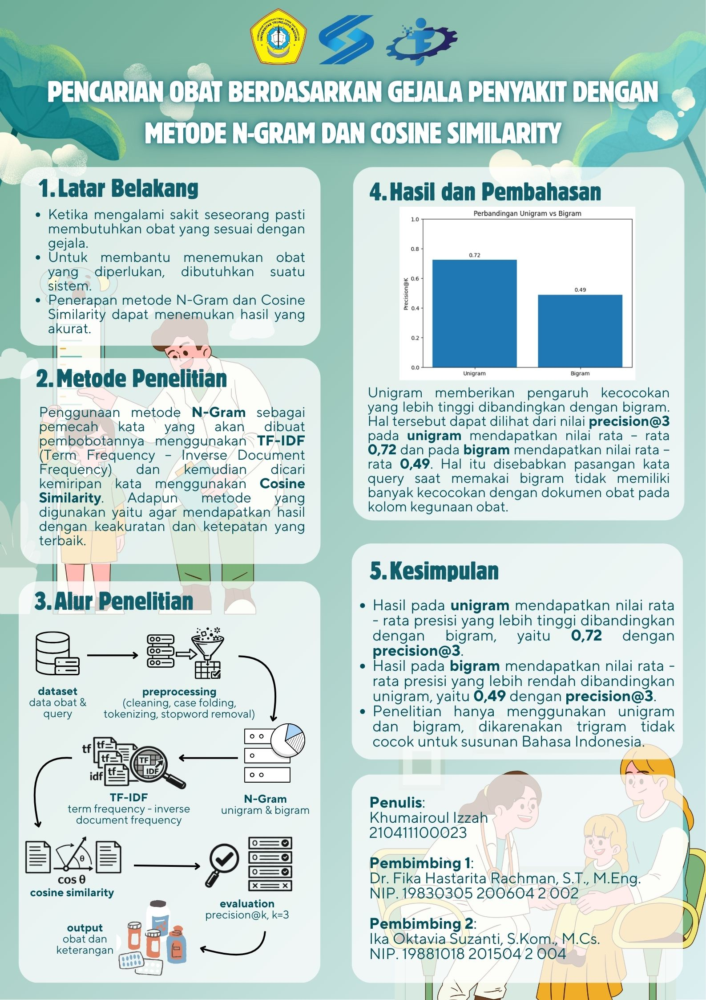

02 · INFORMATION RETRIEVAL
Pencarian Obat Berdasarkan Gejala
Mengembangkan sistem pencarian obat berdasarkan gejala dengan menerapkan Natural Language Processing dan Information Retrieval untuk mengidentifikasi obat yang relevan berdasarkan input gejala pengguna.
Tentang Proyek
Proyek ini merupakan proyek akademik untuk keperluan tugas akhir / skripsi menggunakan data aktual yang sudah divalidasi oleh pakar. Dari data mentah diolah menggunakan cleaning, case folding, tokenizing, stopword removal, kemudian masuk ke pembagian kata menggunakan metode N-Gram dan kemudian dihitung TF-IDF nya, kemudian masuk ke proses mencari kesamaan antar dokumen menggunakan metode Cosine Similarity.
Teknologi yang Digunakan
Python
N-Gram
Cosine Similarity
Streamlit
Dokumentasi

